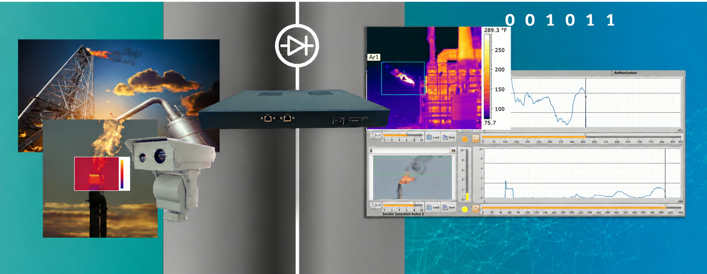

Petrochemical Gas Flare Live Monitoring
How an oil refinery meets a 24/7 regulatory video requirement while keeping its plant network sealed from cyber threats
1The Problem
Gas flares are combustion devices used in petroleum refineries, chemical plants and gas processing facilities. Flare stacks mainly burn off flammable gas released during unplanned events, so what happens at the flare has a direct bearing on safety and on the environment.
That makes flares a natural focus for regulators. Live video lets authorities see what is happening in real time. But streaming video out of an industrial site means opening a network connection, and any connection into a refinery is a possible target for attackers.
2The Challenge
The Ministry of Environment (MoE) requires every open-flame gas stack to be monitored by a live video feed sent from the plant to the MoE control center, 24 hours a day, 7 days a week. To make this possible, the MoE provides a network link to each plant.
For the refinery, that link was a problem in itself. A permanent connection between the refinery and an outside network could be used as an attack vector by cyber criminals, putting critical operations at risk.
There was a practical complication too. The flare camera is a rugged analog unit, so any solution had to work with existing field equipment rather than demand new hardware.
3The Solution
Terafence presented its Uni-Directional RTSP product, VSecure, to the refinery's executives as a way to deliver the live flare video exactly as the MoE requires while creating a hardware-enforced one-way boundary between the two infrastructures.
- Live video moves from the CCTV camera, through the refinery's IT network, to off-site viewers at the MoE
- Traffic flows in one direction only, so nothing from outside can enter the refinery network
- Configurable to work with the existing rugged analog camera
- Continuous 24/7 transmission to the regulator's control center
The Terafence team made several configuration adjustments for the analog camera. Once these were in place, the connection came up quickly and the MoE received video immediately.

4The Impact
The refinery now meets its regulatory obligation and has removed the cyber risk the regulatory link introduced.
“Terafence's solution enables the security of the required information at the regulatory level and its continuous transmission to the target.”
For refineries and other critical sites facing video-monitoring mandates, Terafence shows that compliance and cyber security can go hand in hand.
Regulatory compliance.
The MoE receives the live gas flare feed it requires, around the clock.
Cyber hazard eliminated.
The hardware-enforced one-way boundary means no threat from outside can travel back into the refinery network.
Existing equipment retained.
The rugged analog camera stayed in service, with no costly replacement.
Fast deployment.
Once configured, the link connected quickly and video was available immediately.
Tell us where your boundary sits
Say what has to cross it. We will help you choose the right device and plan a pilot.